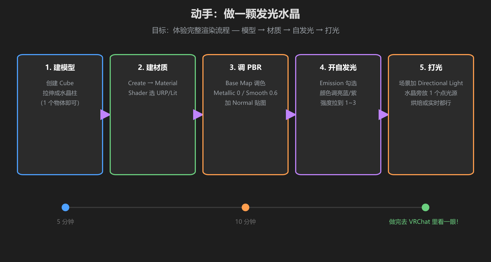
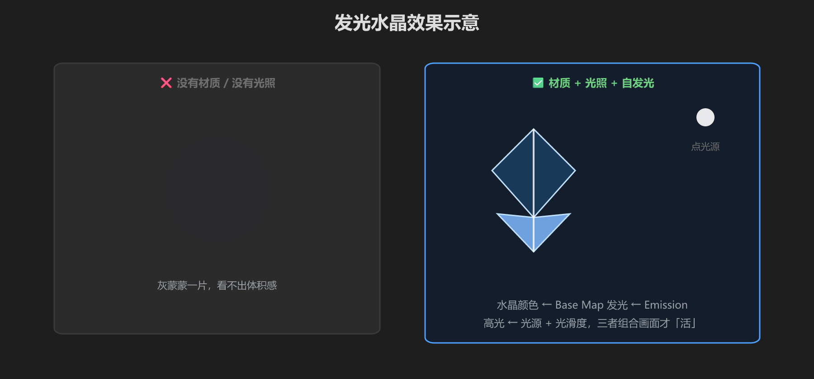

第 5 篇：动手做一颗发光水晶
把前四篇串起来：模型 → 材质 → PBR → 自发光 → 打光，10 分钟做出一颗会发光的水晶，然后丢进你的 VRChat 世界。

图：五步流程 — 建模型 → 建材质 → 调 PBR → 开自发光 → 打光
第一步：建模型
- Hierarchy 右键 →
3D Object → Cube，改名Crystal - 缩放：
Scale = (0.6, 1.6, 0.6)，拉成一根柱子 - （进阶）Cube 顶部用 Mesh 编辑拉成尖角，或用 Blender 做一个五面柱体，导入 FBX
第二步：建材质
- Project 右键 →
Create → Material，命名MAT_Crystal - Shader 下拉选择
Universal Render Pipeline/Lit - 拖到 Crystal 的 MeshRenderer → Materials → Element 0
第三步：调 PBR
- Base Map：颜色改成淡蓝色
#9fd0ff（或拖一张水晶贴图） - Metallic：
0（水晶不是金属） - Smoothness：
0.6~0.7（半光滑，反光不强） - （可选）加一张 Normal Map 做表面纹理
第四步：开自发光
- 展开 Emission 区域，勾选
Emission - 把 Emission Color 调成亮蓝
#4db8ff，强度（HDR 拉杆）调到1~3 - 观察：水晶自己开始发光了，但它还不会照亮周围 —— 需要下一步的光
Emission 强度是 HDR 的，可以超过 1。配合相机后处理（Bloom 泛光）会有漂亮的发光效果。
第五步：打光
- 确认场景里有 Directional Light（太阳），旋转让水晶有明暗面
- 在水晶旁边放一个 Point Light：颜色淡蓝、Intensity
2~3、Range 覆盖水晶周围 - （可选）把点光源的 Color 设为和 Emission 同色，水晶周围会有光晕感

图：左边是没有材质没有光的灰球；右边是「材质 + 光照 + 自发光」组合后的效果
放进 VRChat 世界
- 把水晶放到你想放的位置，复制几个不同大小、旋转出「矿场」感
- 测试：VRChat SDK →
Build & Test进入本地测试 - 看一眼帧率：如果 5 颗水晶 + 5 个点光源开始掉帧，说明光源太多 —— 改成 1 个点光源，其余水晶靠 Emission 假装发光
核心收获：「发光」其实分两层 —— Emission 让物体自己亮，点光源让周围物体被照亮。真实世界的光源很贵，能用 Emission 装光就用 Emission。
学前检查清单
- 完成了一颗发光水晶（材质 + 自发光 + 光照）
- 理解了 Emission 和点光源的分工
- 在 Build & Test 里确认了不卡顿
- 理解了「实时光源少放」在实践中的意义